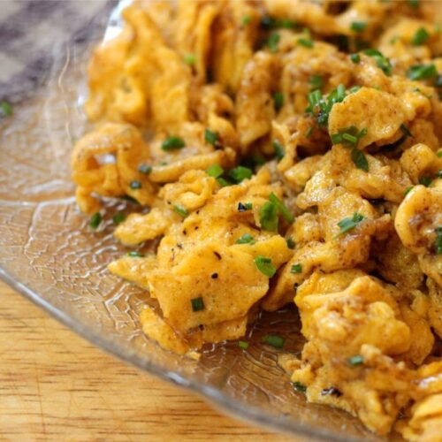

Chads Scrambled Eggs

Sweet and savery scrambled eggs, perfect for picky eaters or a morning sweet tooth! I'm gonna be honest reading the recipe might weird you out
but I promise they're a game changer! For the ingredients I don't have specific amounts I just eye ball everything when I make these eggs, thats
the best part about this recipe is it is 100% eye ball and to taste so you can't mess it up
Ingredients
- How ever many eggs you want to make
- Honey
- Salt and Pepper (to taste)
- Vegitable oil
- Chives
- cayenne pepper powder (only if you like a little spice)
Making the Eggs
- Greese your pan with vegitable oil and put it in medium heat.
- Crack all your eggs directly into the pan, mix in salt and pepper to taste.
- When your eggs are done cooking turn heat to low and drizzle honey over the eggs and mix until eggs turn golden brown
- Add chives and optional a pinch of cayenne pepper powder let cook another 2 minutes on low heat
- Enjoy!
Home Page